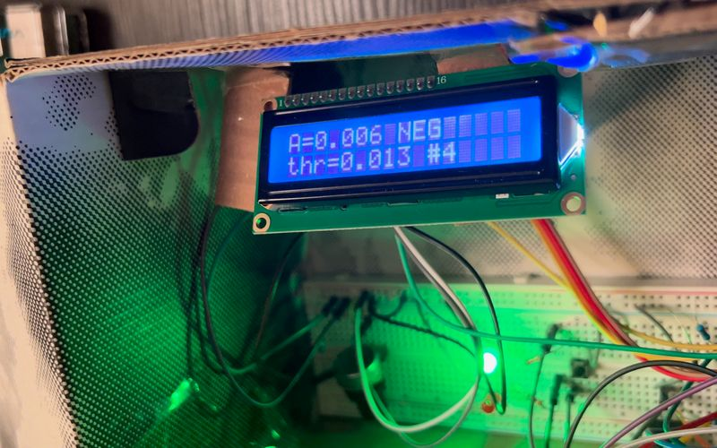
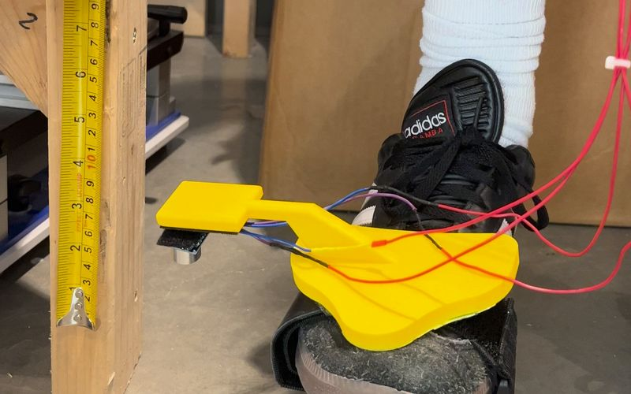

Featured Discovery Project
GlowBox
An embedded reader that turns the line on a colorimetric test strip into an objective, recorded number.

Featured Discovery Project
An embedded reader that turns the line on a colorimetric test strip into an objective, recorded number.
